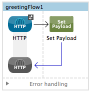
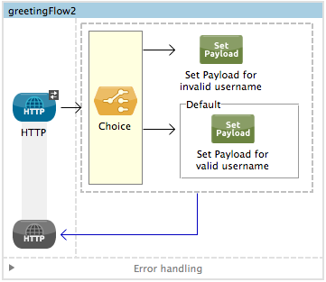
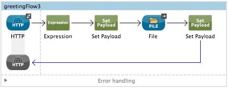
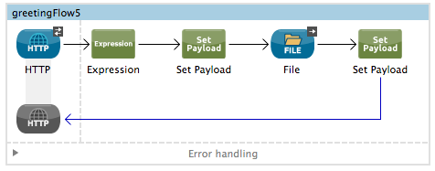
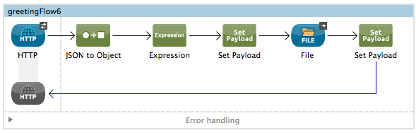

Mule Expression Language Examples
This document walks through a few simple examples that introduce most of the basic implementations of Mule Expression Language (MEL). Each example includes a step-by-step guide for creating the flow in Anypoint Studio’s visual editor or in XML. You can also jump straight to the complete code for all six examples, which you can copy and manipulate further in your own applications.
Prerequisites
This document assumes you are familiar with Mule Expression Language’s basic syntax and are comfortable building and running Mule applications using Mule Studio or XML.
If you aren’t yet familiar with how to access information about the Mule messages that pass through your applications, consider following this tutorial, which walks you through both examining your Mule message and its data structure and writing simple MEL expressions.
Example 1 – Accessing Properties
This example creates a simple web service that takes an HTTP request that includes a username parameter and returns a greeting using that username.
In this example, you use MEL to:
-
Access an inbound property
-
Dynamically set the payload
Studio Visual Editor
-
In a new flow, drag an HTTP connector and a Set Payload transformer.
 -
Open the HTTP connector’s properties editor and give it the path
greet1. Then create a Connector Configuration element for it and set its host tolocalhostand port to8081. In this way, the connector can be reached via the URIhttp://localhost:8081/greet1 -
Open the Set Payload’s properties editor and set the value field with the following MEL expression:
Hello #[message.inboundProperties.'http.query.params'.username]
This expression captures the inbound property "username", which is passed as a query string parameter when calling the service.
-
Save and run the project.
-
Through a web browser, access the URL
http://localhost:8081/greet1?username=yourName
The response prints the wordsHello yourNamein your browser.
XML Editor
-
In a new flow, add an
http:listenerand configure it with the pathgreet1.<http:listener config-ref="HTTP_Listener_Configuration" path="greet1" doc:name="HTTP"/>Attribute Value config-ref
HTTP_Listener_Configuration
path
greet1
doc:name
HTTP
In this way, the connector is reached via the URI
http://localhost:8081/greet1. -
Create a Connector Configuration element for it with a name that matches the referenced element in
config-ref. Set the Port to 8081 and the Path tolocalhost<http:listener-config name="HTTP_Listener_Configuration" host="localhost" port="8081" doc:name="HTTP Listener Configuration"/>Attribute Value name
HTTP_Listener_Configuration
host
--- localhost
port
8081
path
greet1
doc:name
HTTP_Listener_Configuration
-
After the connector, add a
set-payloadtransformer, configured as shown:<set-payload value="Hello #[message.inboundProperties.'http.query.params'.username]" doc:name="Set Payload"/>Attribute Value value
Hello #[message.inboundProperties.'http.query.params'.username]
doc:name
Set Payload
The MEL expression used in
valuecaptures the inbound propertyusername, which is passed as a query string parameter when calling the service. -
The full code of your flow should look like this:
<http:listener-config name="HTTP_Listener_Configuration" host="localhost" port="8081" doc:name="HTTP Listener Configuration"/> <flow name="greetingFlow1" doc:name="greetingFlow1"> <http:listener config-ref="HTTP_Listener_Configuration" path="greet1" doc:name="HTTP"/> <set-payload value="Hello #[message.inboundProperties.'http.query.params'.username]" doc:name="Set Payload"/> </flow> -
Save and run the project.
-
Through a browser, access the URL` http://localhost:8081/greet1?username=yourName `
This displays the wordsHello yourNamein your browser.
Example 2 – Dynamic Routing by Evaluating a Condition
In the previous example, if your call to the service doesn’t include a username parameter, it results in an error. You can prevent this from happening by adding some flow control components. This example includes a Choice Router that verifies if the required parameter is being passed.
In this example, you use MEL to:
-
Evaluate conditions in a choice component
-
Access an inbound property
-
Dynamically set the payload
Studio Visual Editor
-
In a new flow, drag an HTTP connector and a Choice Router. Inside this Choice Router, add a Set Payload component in the space provided for the Default action and another Set Payload as a separate branch, as shown below.
 -
Open the HTTP Connector’s properties editor and give it the path
greet2. In the Connector Configuration field, simply select the same global element you created for the previous example out of the dropdown list. In this way, the connector is reached via the URIhttp://localhost:8081/greet2. -
Open the properties editor of the Set Payload transformer that sits in the Default space and set the Display Name to
Set Payload for valid usernameand configure the Value with the following MEL expression:Hello #[message.inboundProperties.'http.query.params'.username]
This expression captures the inbound property "username", which is passed as a query string parameter when calling the service.
-
Open the properties editor of the other Set Payload transformer (the one that doesn’t sit in the default space) and set the Display Name to
Set Payload for invalid usernameand configure the Value with the expression#['No username provided']. -
Open the Choice Router’s properties editor to configure the routing logic. Double click on row for the non-default route to provide a conditional expression. In the window that opens up, write the following MEL expression:
#[message.inboundProperties.'http.query.params'.username == empty]
This expression accesses the username inbound property and determines whether or not it is
nullor an empty string. This expression returns either Boolean true or false.In MEL, the keyword
emptytests the emptiness of a value, and returns boolean true for any of the following:` `-
null -
boolean false
-
empty strings or strings with only white space
-
0 value numeric values
-
empty collections
-
-
Save and run the project.
-
Through a web browser, access the URL ` http://localhost:8081/greet2?username=yourName`. This displays the words
Hello yourNamein your browser. -
Then, access the URL again, but this time do not include any parameters. Verify that the expected output is received.
XML Editor
-
In a new flow, add an
<http:listenerelement, with its path set togreet2and that references the global element you created in the previous example:<http:listener config-ref="HTTP_Listener_Configuration" path="greet2" doc:name="HTTP"/>Attribute Value config-ref
HTTP_Listener_Configuration
path
greet2
doc:name
HTTP
In this way, the connector is reached via the URI
http://localhost:8081/greet2. -
After the connector, add a choice element with two possible outputs. One of these outputs should be the default, the other evaluates a MEL expression.
<choice doc:name="Choice"> <when> </when> <otherwise> </otherwise> </choice>Inside the
whentag, write the following MEL expression:expression="#[message.inboundProperties.'http.query.params'.username == empty]"
This expression accesses the username inbound property and determines whether or not it is
nullor an empty string. This expression returns either Boolean true or false.In MEL, the keyword
emptytests the emptiness of a value, and returns boolean true for any of the following:` `-
null -
boolean false
-
empty strings or strings with only white space
-
0 value numeric values
-
empty collections
-
-
On each of the two paths in the choice router, add a
set-payloadtransformer. In the firstset-payloadtransformer, add the following attributes:Attribute Value value
#[No username provided]
doc:name
Set Payload for invalid username
In the second set-payload transformer, use a MEL expression to access the inbound property:
Attribute Value value
"Hello #[message.inboundProperties.'http.query.params'.username]"
doc:name
Set Payload for valid username
The MEL expression in the
valueattribute of the secondset-propertycaptures the inbound propertyusername, which is passed as a query string parameter when calling the service.<choice doc:name="Choice"> <when expression="#[message.inboundProperties.'http.query.params'.username == empty]"> <set-payload value="#['No username provided']" doc:name="Set Payload for invalid username"/> </when> <otherwise> <set-payload value="Hello #[message.inboundProperties.'http.query.params'.username]" doc:name="Set Payload for valid username"/> </otherwise> </choice> -
The full code of your flow should look like this:
<flow name="greetingFlow2" > <http:listener config-ref="HTTP_Listener_Configuration" path="greet2" doc:name="HTTP"/> <choice doc:name="Choice"> <when expression="#[message.inboundProperties.'http.query.params'.username == empty]"> <set-payload value="#['No username provided']" doc:name="Set Payload for invalid username"/> </when> <otherwise> <set-payload value="Hello #[message.inboundProperties.'http.query.params'.username]" doc:name="Set Payload for valid username"/> </otherwise> </choice> </flow> -
Save and run the project.
-
Through a browser, access the URL` http://localhost:8081/greet1?username=yourName `
This prints the wordsHello yourNamein your browser. -
Then, access the URL again, but this time do not include any parameters. Verify that the expected output is received.
Example 3 – Variable Assignment and Evaluating Conditions
In this example, the service saves a CSV file with user data besides just returning a greeting. The call to the service includes two parameters, username and age. The service stores these two parameters and adds a third boolean parameter that evaluates if the user is underage (if age is > 18).
In this example, you can use MEL to:
-
Set a flow variable in the message
-
Generate an output based on evaluating the input
-
Access an inbound property
-
Dynamically set the payload
Studio Visual Editor
-
In a new flow, drag an HTTP connector, followed by an Expression component, then a Set Payload component, a File Endpoint, and finally another Set Payload Component.
 -
Open the HTTP connector’s properties editor and give it the Path
greet3. In this way, the connector can be reached via the URI ` http://localhost:8081/greet3`. -
In the expression component, set the following MEL expression:
flowVars.username = message.inboundProperties.'http.query.params'.username
This expression takes the value of the inbound property
usernameand sets it as the flow variableusername.Because this MEL expression is used in an expression component, it doesn’t need to be surrounded with #[]. -
In the Set Payload transformer, set the Value to the following MEL expressions:
#[message.inboundProperties.'http.query.params'.username], #[message.inboundProperties.'http.query.params'.age], #[message.inboundProperties.'http.query.params'.age > 18]This sets the payload to a string that contains three comma-separated values. The third of these values is evaluating a condition and returns
trueorfalsedepending on the user’s age. -
In the properties editor of the File endpoint, set a path for the file to be saved.
-
Open the properties editor of the final Set Payload transformer and set the Value field with the following MEL expression:
Hello #[flowVars.username]
This expression captures the flow variable
username, which was created by the Expression Component in your flow. -
Save and run the project.
-
Through a web browser, access the URL
http://localhost:8081/greet3?username=yourName&age=22
This displays the wordsHello yourNamein your browser and also saves a CSV file that contains this data, plus the valuetruefor the boolean parameter.
XML Editor
-
In a new flow, add an
http:listener. Configure it as shown:<http:listener config-ref="HTTP_Listener_Configuration" path="greet3" doc:name="HTTP"/>Attribute Value config-ref
HTTP_Listener_Configuration
path
greet3
doc:name
HTTP
In this way, the connector can be reached via the URI
http://localhost:8081/greet3. -
After the connector, add an expression component that uses a MEL expression to record the inbound property
usernameinto a flowVar.<expression-component doc:name="Expression"><![CDATA[flowVars.username = message.inboundProperties.'http.query.params'.username]]> </expression-component>This expression takes the value of the inbound property
usernameand sets it as the flow variableusername.Since this MEL expression is used in an expression component, it doesn’t need to be surrounded with brackets #[] -
Add a Set Payload transformer and set the
valuefield to a MEL expression:<set-payload value="#[message.inboundProperties.'http.query.params'.username], #[message.inboundProperties.'http.query.params'.age], #[message.inboundProperties.'http.query.params'.age >18]" doc:name="Set Payload"/>Attribute Value value
#[message.inboundProperties.'http.query.params'.username], #[message.inboundProperties.'http.query.params'.age], #[message.inboundProperties.'http.query.params'.age >18]
doc:name
Set Payload
This sets the payload to a string that contains three comma-separated values. The third of these values is evaluating a condition and returns
trueorfalsedepending on the user’s age. -
Below, add a
file:outbound-endpointto send this data to a file:<file:outbound-endpoint path="path_of_your_choice" responseTimeout="10000" doc:name="File"/>Attribute Value path
(Example)
/Users/AaronMacbook/DownloadsresponseTimeout
10000
doc:name
File
-
Below, add another Set Payload transformer containing a MEL expression that references the flow variable that you set earlier in the flow:
<set-payload value="Hello #[flowVars.username]" doc:name="Set Payload"/>This expression accesses the flow variable
username, which was created by the Expression Component in your flow.Attribute Value value
Helo #[flowVars.username]
doc:name
Set Payload
-
The full code of your flow should look like this:
<flow name="greetingFlow3" > <http:listener config-ref="HTTP_Listener_Configuration" path="greet3" doc:name="HTTP"/> <expression-component doc:name="Expression"><![CDATA[flowVars.username = message.inboundProperties.'http.query.params'.username]]></expression-component> <set-payload value="#[message.inboundProperties.'http.query.params'.username], #[message.inboundProperties.'http.query.params'.age], #[message.inboundProperties.'http.query.params'.age >18]" doc:name="Set Payload"/> <file:outbound-endpoint path="path_of_your_choice" responseTimeout="10000" doc:name="File"/> <set-payload value="Hello #[flowVars.username]" doc:name="Set Payload"/> </flow> -
Save and run your project.
-
In a browser, access the URL` http://localhost:8081/greet3?username=yourName&age=22 `
This displays the wordsHello yourNamein your browser and also saves a CSV file that contains this data, plus the valuetruefor the boolean parameter.
Example 4 – Using Xpath
In all the previous examples, calls to the service were made via GET requests that included query parameters. In this example, the service you create is an API that accepts POST requests with XML bodies. The required XML includes two parameters, username and age. The service stores these two parameters and adds a third boolean parameter that evaluates if the user is above a certain age (if age >18)
In this example, you use MEL to:
-
Set a flow variable in the message
-
Generate an output based on evaluating the input
-
Parse an XML input through an xpath query
-
Dynamically set the payload
Studio Visual Editor
-
In a new flow, drag an HTTP connector, followed by an Expression Component, a Set Payload transformer, a File endpoint, and another Set Payload transformer.
 -
Open the HTTP connector’s properties editor and give it the path
greet5. In this way, the connector can be reached via the URIhttp://localhost:8081/greet5. -
Open the Expression Component’s properties editor and set the following MEL expression:
flowVars.username = xpath3('/user/username').textThis expression calculates the result of the xpath3 function and sets it as the value of the flow variable
username.Since this MEL expression is used in an expression component, it doesn’t need to be surrounded with #[].Since the payload is in XML, xpath3 is needed to parse it.
-
In the Set Payload transformer, set the Value field to the following:
#[xpath3('/user/username').text], #[xpath3('/user/age').text], #[xpath3('/user/age').text > 18]This sets the payload to a string that contains three comma-separated values. The third of these values is evaluating a condition and returns
trueorfalsedepending on the user’s age. Once again, as the payload is in XML, xpath3 is needed to parse it. -
In the File endpoint, set a path of your choice to determine where the .csv file should be saved.
-
Open the properties editor of the final Set Payload transformer and set the Value field with the following:
Hello #[flowVars.username]
This expression accesses the flow variable username, which was created by the Expression Component earlier in your flow.
-
Save and run your project.
-
You must now send the HTTP connector an HTTP request that includes a body with an attached XML file.
Send a POST request to
http://localhost:8081/greet5attaching an XML to the body of the message. A sample XML is provided below.The easiest way to do this is to send a POST via a browser extension such as Postman (for Google Chrome) or the curl command line utility. <user> <username>test</username> <age>21</age> </user>
This displays the words Hello yourName in your browser and also saves a CSV file that contains this data, plus the value true for the boolean parameter.
XML Editor
-
In a new flow, add an `http:listener `configured as shown.
<http:listener config-ref="HTTP_Listener_Configuration" path="greet5" doc:name="HTTP"/>Attribute Value config-ref
HTTP_Listener_Configuration
path
greet5
doc:name
HTTP
In this way, the connector is be reached via the URI
http://localhost:8081/greet5. -
After the connector, add an Expression Component that uses a MEL expression to record the inbound property
usernameinto a flow variable. Because the payload is an XML file, it must be parsed with xpath3.<expression-component doc:name="Expression"><![CDATA[flowVars.username = xpath3('/user/username').text]]></expression-component>This expression calculates the result of the xpath3 function and sets it as the value of the flow variable
username.Since this MEL expression is used in an expression component, it isn’t surrounded with brackets #[] -
Add a set-payload transformer and set the
valueattribute to a comma-separated list of MEL expressions:<set-payload value="#[xpath3('/user/username').text], #[xpath3('/user/age').text], #[xpath3('/user/age').text > 18]" doc:name="Set Payload"/>Attribute Value value
#[xpath3('/user/username').text], #[xpath3('/user/age').text], #[xpath3('/user/age').text > 18]doc:name
Set Payload
This sets the payload to a string that contains three comma-separated values. The third of these values evaluates a condition and returns
trueorfalsedepending on the user’s age. Once again, as the payload is in XML, xpath3 is needed to parse it. -
Add a
file:outbound-endpointto output the payload into a csv file.<file:outbound-endpoint path="path_of_your_choice" responseTimeout="10000" doc:name="File"/>Attribute Value path
(Example)
Users/AaronMacBook/Downloads
responseTimeout
10000
doc:name
File
-
Below, add another set-payload transformer with a value containing a MEL expression that references the flow variable
usernamethat you set earlier in the flow.:<set-payload value="Hello #[flowVars.username]" doc:name="Set Payload"/>Attribute Value value
Hello #[flowVars.username]
doc:name
Set Payload
-
The full code of your flow should look like this:
<flow name="greetingFlow5" doc:name="greetingFlow5"> <http:listener config-ref="HTTP_Listener_Configuration" path="greet5" doc:name="HTTP"/> <expression-component doc:name="Expression"><![CDATA[flowVars.username = xpath3('/user/username').text]]></expression-component> <set-payload value="#[xpath3('/user/username').text], #[xpath3('/user/age').text], #[xpath3('/user/age').text > 18]" doc:name="Set Payload"/> <file:outbound-endpoint path="path_of_your_choice" responseTimeout="10000" doc:name="File"/> <set-payload value="Hello #[flowVars.username]" doc:name="Set Payload"/> </flow> -
Save and run your project. You must now send the HTTP connector an HTTP request that includes a body with an attached XML file. Send a POST request to
http://localhost:8081/greet5, attaching an XML to the body of the message. A sample XML is provided below.The easiest way to do this is by sending a POST via a browser extension such as Postman (for Google Chrome) or the curl command line utility. <user> <username>test</username> <age>21</age> </user>This displays the words
Hello yourNamein your browser and also saves a CSV file that contains this data, plus the valuetruefor the boolean parameter.
Example 5 – Working with Java Objects
This example is just like example 5, except that the service now receives JSON inputs rather than of XML.
The JSON input includes two parameters, username and age. The service stores these two parameters and adds a third boolean parameter that evaluates if the user is above a certain age (if age>18). Mule first transforms the JSON object into a Java object so that MEL expressions can access the object’s attributes.
In this example, you use MEL to:
-
Set a flow variable in the message
-
Generate an output based on evaluating the input
-
Access a Java object’s attributes
-
Dynamically set the payload
Studio Visual Editor
-
In a new flow, drag an HTTP connector, followed by a JSON to Object transformer, an Expression Component, a Set Payload transformer, a File endpoint, and another Set Payload transformer.
 -
Open the HTTP connector’s properties editor and give it the path
greet6. In this way, the connector is reached via the URIhttp://localhost:8081/greet6. -
Open the properties editor of the JSON to Object transformer and click the Advanced tab. Set the Return Class to
java.lang.Object. With this configuration, the JSON input becomes a Java object with attributes that can be easily called by usingobject.attributenotation. -
In the expression component, set the following MEL expression that accesses an attribute of the object and sets that as the value of a flow variable called
username:flowVars.username = payload.username
Since this MEL expression is used in an expression component, it doesn’t need to be surrounded with #[]. -
In the Set Payload component, set the Value field to the following comma-separated list of MEL expressions:
#[payload.username], #[payload.age], #[payload.age > 18]This sets the payload to a string that contains three comma-separated values. The third of these values is evaluating a condition and returns
trueorfalsedepending on the user’s age. -
In the File endpoint, set a Path of your choice to determine where the CSV files should be saved.
-
Open the properties editor of the final Set Payload transformer and set the Value field with the following:
Hello #[flowVars.username]
This expression accesses the flow variable
username, which was created by the Expression Component earlier in your flow. -
Save and run the project.
-
You must now send the HTTP connector an HTTP request that includes a body with an attached JSON file.
Send a POST request to
http://localhost:8081/greet6, attaching a JSON object the body of the message. A sample JSON is provided below.The easiest way to do this is by sending a POST via a browser extension such as Postman (for Google Chrome) or the curl command line utility. { "username": "test", "age" : 21 }This displays the words
Hello yourNamein your browser and also saves a CSV file that contains this data, plus the valuetruefor the boolean parameter.
XML Editor
-
In a new flow, add an `http:listener `configured as shown.
<http:listener config-ref="HTTP_Listener_Configuration" path="greet6" doc:name="HTTP"/>Attribute Value config-ref
HTTP_Listener_Configuration
path
greet6
doc:name
HTTP
In this way, the connector can be reached via the URI
http://localhost:8081/greet6. -
After the connector, add a
json:json-to-object-transformer.<json:json-to-object-transformer doc:name="JSON to Object" returnClass="java.lang.Object"/>Attribute Value returnClass
java.lang.Object
doc:name
JSON to Object
With this configuration, the JSON input becomes a Java object with attributes that can be easily called by using
object.attributenotation. -
After the transformer, add an expression component that uses a MEL expression to access the Java object’s
usernameattribute and assign its value into a flow variable of the same name.<expression-component doc:name="Expression"><![CDATA[flowVars.username = payload.username]]></expression-component>Since this MEL expression is used in an expression component, it doesn’t need to be surrounded with #[]. -
Add a set-payload transformer and set the
valueattribute to a comma-separated list of MEL expressions:<set-payload value="#[payload.username], #[payload.age], #[payload.age > 18]" doc:name="Set Payload"/>Attribute Value value
#[payload.username], #[payload.age], #[payload.age > 18]
doc:name
Set Payload
This sets the payload to a string that contains three comma-separated values. The third of these values is evaluating a condition and returns
trueorfalsedepending on the user’s age. -
Add a
file:outbound-endpointto output the payload into a csv file.<file:outbound-endpoint path="path_of_your_choice" responseTimeout="10000" doc:name="File"/>Attribute Value path
(Example)
Users/AaronMacBook/Downloads
responseTimeout
10000
doc:name
File
-
Below, add another set-payload transformer, containing a MEL expression that references a flow variable:
<set-payload value="Hello #[flowVars.username]" doc:name="Set Payload"/>This expression accesses the flow variable
username, which was created by the Expression Component earlier in your flow.Attribute Value value
Hello #[flowVars.username]
doc:name
Set Payload
-
The full code of your flow should look like this:
<flow name="greetingFlow6" doc:name="greetingFlow6"> <http:listener config-ref="HTTP_Listener_Configuration" path="greet6" doc:name="HTTP"/> <json:json-to-object-transformer doc:name="JSON to Object" returnClass="java.lang.Object"/> <expression-component doc:name="Expression"><![CDATA[flowVars.username = payload.username]]></expression-component> <set-payload value="#[payload.username], #[payload.age], #[payload.age > 18]" doc:name="Set Payload"/> <file:outbound-endpoint path="users" responseTimeout="10000" doc:name="File"/> <set-payload value="Hello #[flowVars.username]" doc:name="Set Payload"/> </flow> -
Save and run the project. You must now send the HTTP connector an HTTP request that includes a body with an attached JSON file.
Send a POST request to
http://localhost:8081/greet6, attaching a JSON object the body of the message. A sample JSON is provided below.The easiest way to do this is to send a POST via a browser extension such as Postman (for Google Chrome) or the curl command line utility. { "username": "test", "age" : 21 }
This displays the words Hello yourName in your browser and also saves a CSV file that contains this data, plus the value true for the boolean parameter.
Full Code for All Examples
| For your convenience, you may download the complete project. Note that this project is configured specifically for the Mule 3.6.0 runtime. Refer to the 3.5.X documentation for a 3.5.X compatible version. |
<?xml version="1.0" encoding="UTF-8"?>
<mule xmlns:json="http://www.mulesoft.org/schema/mule/json"
xmlns:data-mapper="http://www.mulesoft.org/schema/mule/ee/data-mapper" xmlns:cxf="http://www.mulesoft.org/schema/mule/cxf"
xmlns:file="http://www.mulesoft.org/schema/mule/file" xmlns:ws="http://www.mulesoft.org/schema/mule/ws" xmlns:tls="http://www.mulesoft.org/schema/mule/tls" xmlns:http="http://www.mulesoft.org/schema/mule/http" xmlns:tracking="http://www.mulesoft.org/schema/mule/ee/tracking" xmlns="http://www.mulesoft.org/schema/mule/core" xmlns:doc="http://www.mulesoft.org/schema/mule/documentation"
xmlns:spring="http://www.springframework.org/schema/beans"
xmlns:xsi="http://www.w3.org/2001/XMLSchema-instance" xsi:schemaLocation="
http://www.mulesoft.org/schema/mule/json http://www.mulesoft.org/schema/mule/json/current/mule-json.xsd http://www.mulesoft.org/schema/mule/http http://www.mulesoft.org/schema/mule/http/current/mule-http.xsd
http://www.springframework.org/schema/beans http://www.springframework.org/schema/beans/spring-beans-current.xsd
http://www.mulesoft.org/schema/mule/core http://www.mulesoft.org/schema/mule/core/current/mule.xsd
http://www.mulesoft.org/schema/mule/file http://www.mulesoft.org/schema/mule/file/current/mule-file.xsd
http://www.mulesoft.org/schema/mule/ee/tracking http://www.mulesoft.org/schema/mule/ee/tracking/current/mule-tracking-ee.xsd
http://www.mulesoft.org/schema/mule/tls http://www.mulesoft.org/schema/mule/tls/current/mule-tls.xsd
http://www.mulesoft.org/schema/mule/ee/data-mapper http://www.mulesoft.org/schema/mule/ee/data-mapper/current/mule-data-mapper.xsd">
<data-mapper:config name="new_mapping_grf" transformationGraphPath="new_mapping.grf" doc:name="DataMapper"/>
<data-mapper:config name="map_to_csv" transformationGraphPath="map_to_csv.grf" doc:name="map_to_csv"/>
<!-- Necessary configuration element used by all examples -->
<http:listener-config name="HTTP_Listener_Configuration" host="localhost" port="8081" doc:name="HTTP Listener Configuration"/>
<!-- Example 1 Start - How to access properties using MEL, how to set a payload dynamically -->
<flow name="greetingFlow1" doc:name="greetingFlow1">
<http:listener config-ref="HTTP_Listener_Configuration" path="greet1" doc:name="HTTP"/>
<set-payload value="Hello #[message.inboundProperties.'http.query.params'.username]" doc:name="Set Payload"/>
</flow>
<!-- Example 1 End -->
<!-- Example 2 Start - How to dynamically route messages based on the results of a conditional expression -->
<flow name="greetingFlow2" >
<http:listener config-ref="HTTP_Listener_Configuration" path="greet2" doc:name="HTTP"/>
<choice doc:name="Choice">
<when expression="#[message.inboundProperties.'http.query.params'.username == empty]">
<set-payload value="#['No username provided']" doc:name="Set Payload for invalid username"/>
</when>
<otherwise>
<set-payload value="Hello #[message.inboundProperties.'http.query.params'.username]" doc:name="Set Payload for valid username"/>
</otherwise>
</choice>
</flow>
<!-- Example 2 End -->
<!-- Example 3 Start - How to assign variables, how to evaluate a condition -->
<flow name="greetingFlow3" >
<http:listener config-ref="HTTP_Listener_Configuration" path="greet3" doc:name="HTTP"/>
<expression-component doc:name="Expression"><![CDATA[flowVars.username = message.inboundProperties.'http.query.params'.username]]></expression-component>
<set-payload value="#[message.inboundProperties.'http.query.params'.username], #[message.inboundProperties.'http.query.params'.age], #[message.inboundProperties.'http.query.params'.age >18]" doc:name="Set Payload"/>
<file:outbound-endpoint path="Path_of_your_choice" responseTimeout="10000" doc:name="File"/>
<set-payload value="Hello #[flowVars.username]" doc:name="Set Payload"/>
</flow>
<!-- Example 3 End -->
<!-- Example 4 Start - How to parse XML input with Xpath -->
<flow name="docs-greetingFlow5" doc:name="greetingFlow5">
<http:listener config-ref="HTTP_Listener_Configuration" path="greet5" doc:name="HTTP"/>
<expression-component doc:name="Expression"><![CDATA[flowVars.username = xpath3('/user/username').text]]></expression-component>
<set-payload value="#[xpath3('/user/username').text], #[xpath3('/user/age').text], #[xpath3('/user/age').text > 18]" doc:name="Set Payload"/>
<file:outbound-endpoint path="Path_of_your_choice" responseTimeout="10000" doc:name="File"/>
<set-payload value="Hello #[flowVars.username]" doc:name="Set Payload"/>
</flow>
<!-- Example 4 End -->
<!-- Example 5 Start - How to parse Java objects -->
<flow name="greetingFlow6" doc:name="greetingFlow6">
<http:listener config-ref="HTTP_Listener_Configuration" path="greet6" doc:name="HTTP"/>
<json:json-to-object-transformer doc:name="JSON to Object" returnClass="java.lang.Object"/>
<expression-component doc:name="Expression"><![CDATA[flowVars.username = payload.username]]></expression-component>
<set-payload value="#[payload.username], #[payload.age], #[payload.age > 18]" doc:name="Set Payload"/>
<file:outbound-endpoint path="Path_of_your_choice" responseTimeout="10000" doc:name="File"/>
<set-payload value="Hello #[flowVars.username]" doc:name="Set Payload"/>
</flow>
<!-- Example 5 End -->
</mule>